How to install the MiTAC K245 Camera¶
Reference Document¶
This how-to guide is a reference to this official MiTAC K245 installation guide.
I. Checking the camera box¶
Go through the box and check if you have received all the following items.
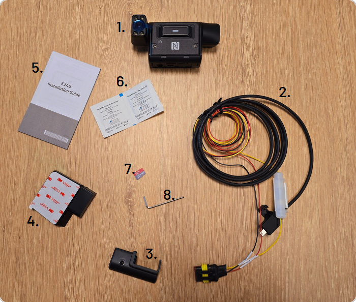
K245 Camera (x1)
Power harness
Tamper proof cover/lid
Mounting bracket
User guide
Alcohol wipes
SIM
Allen key
II. Pre-installation checks¶
Before you being the physical installation of the dashcam, performing these pre-installation checks is crucial.
Taking a few minutes now to verify these points will save you time later and ensure a successful and reliable camera setup.
1. Vehicle and Environment¶
1a. Compatibility¶
Ensure that the vehicle can supply the specified power to the camera through the OBD-2 port or the 3-wire cable.
Refer to the wiring section of this guide for more information.
1b. Network Coverage¶
Make sure the vehicle is parked outdoors, typically in an open parking lot, with good connectivity and at least 82ft (25m) of clear line-of-sight in front of the vehicle.
1c. Clean Windshield¶
The position where the mounting bracket is affixed on the windshield should be clean and free from any obstructions such as wipers, stickets or dirt.
Check the mounting section for more information.
2. Device and Power¶
2a. Camera Provisioning¶
Before you start, ensure that the dashcam is provisioned properly on the Terminus GPS platform.
If you observe a blinking green LED, this indicates that the camera has been provisioned properly and is connected to the Internet.
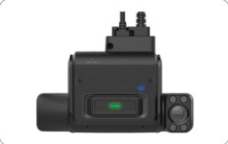
If you observe a blinking cyan LED, it indicates that the camera has not been provisioned properly on the Terminus GPS platform.
If you observe a blinking blue LED, it indicates that the camera does not have connectivity.
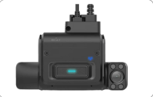
2b. Power Source¶
Make sure the vehicle’s power source is working and has the correct voltage.
3b. SIM Activation¶
Make sure that the SIM card is active, inserted properly and has a data plan.
III. Installing the camera¶
The camera needs to be connected to a power source using either an OBD-2 harness or a 3-wire fuse box connection.
1. Connect using the OBD-2 port¶
1a. Locate OBD-2 port¶
Locate the OBD-2 port on the vehicle, usually found under the dashboard or steering column.
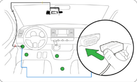
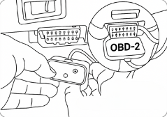
1b. Secure Connection¶
Plug the harness securely into the port.
Important
If the port is being used by another device, a Y-splitter can be safely used to connect both devices to the OBD-2 port.
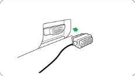
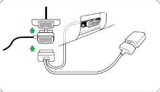
1c. Ignition On¶
Turn on the vehicle’s ignition and wait 10 seconds for the camera to boot up.
During the boot up, the camera will blink cyan LED for 15 seconds. If this continues to blink cyan even after a minute, please check the Terminus GPS platform to ensure the camera was provisioned correctly and it has Internet connectivity.
1d. Audio Confirmation¶
A single beep will sound to indicate a proper power connection. The camera will also announce that the trip has started.
2. Connect using 3-wire connector¶
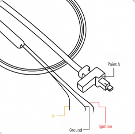
2a. Initial hook-up¶
Make sure the engine is off, connect the mini display port connector (point A) of the harness to the matching connector on the camera.
Make sure that the connector lock latches into place.
The other side of the harness has three wires: ACC (red), Power/B+ (yellow) and Ground/GND (black).
2b. Engine Off¶
Ensure the vehicle ignition and engine is turned off before you proceed.
2c. Red Wire (Ignition)¶
Connect the red wire to an ignition line or ACC.
2d. Yellow Wire (Constant Power B+)¶
Find a constant 12-24V power source. Please use a multimeter to verify the rated voltage.
Connect the yellow wire to the identified continuous power source.
2e. Black Wire (Ground)¶
Connect the black wire to a factory bolt or a spare ground lead.
Use chassis ground only in light vehicles–do not use it in light or heavy duty trucks.
2f. Final Step¶
Turn on the vehicle ignition and wait 2 minutes.
The LED should blink cyan, blue then green.
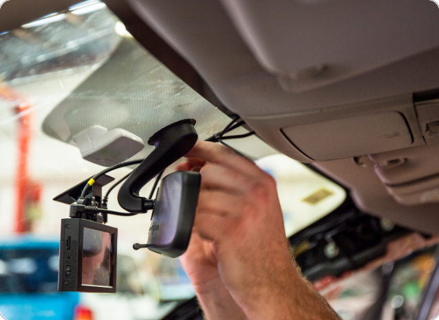
IV. Mounting the camera¶
1. Removing the side panel¶
Hold the camera up-right, keeping the logo (panic button) facing the cabin/driver.
Lossen the screws shown below to reorient the driver and road and lock it in place. The two screws should remain attached to the panel.
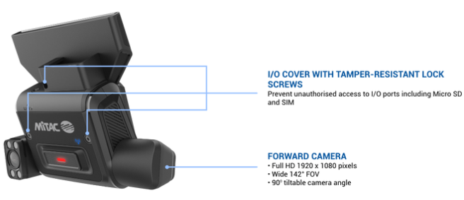
2. Inserting the SD card¶
Verify if the camera already has an SD card.
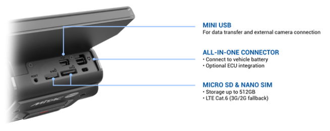
Find the SD card slot, which is located below the SIM card slot.
Insert the new SD card by pushign it into the slot until your hear and feel it click into place.
If the camera already has an SD card, gently press on it to release and remove it, then insert a new SD card.
Important
Having an SD card is essential for storing video footage captured during each trip. This ensures that critical events or incidents are recorded and and be reviewed later.
3. Choosing the mounting area¶
Sit in the driver’s seat and pull down both sun visors.
Hold the camera in the recommended shaded area on the windshield, making sure that:
It doesn’t block the driver’s view.
The sun visors and rearview mirror don’t block the driver-facing camera.
The sunstrip doesn’t block the road-facing camera or expose it to too much heat.
The camera should be mounted on the driver’s side of the rearview mirror.
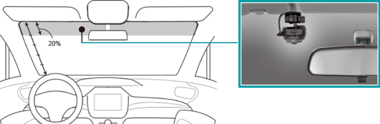
4. Adjusting road-facing camera¶
Reorient/pitch the lens up or down to give the camera a clear view in front of the vehicle.
Red line below is only an indicator of the horizon line in the camera field of view.
GOOD
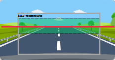
BAD
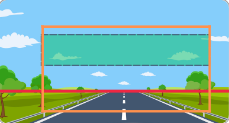
BAD
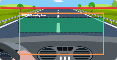
5. Adjusting driver-facing camera¶
Reorient the driver camera lens such that the camera has a clear and unobstructed view of the driver’s face and torso.
Mount the camera on the driver’s side of the rearview mirror.
Center it on the driver’s seat.
The camera should be mounted towards the top edge of the windshield just above the wiper zone.
Make sure the head rest on the driver’s seat is visible in the top quarter of the camera preview.
Position the driver’s face within the recommended zone shown in the reference images.
Make sure the seat belt on the driver’s torso is clearly visible to the camera field-of-view.
Position the camera for a full-frontal or near-frontal view of the driver, instead of a side view.
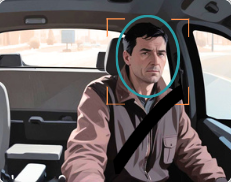
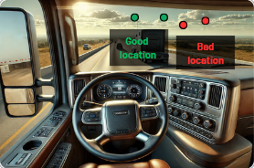
6. Cleaning the windshield¶
Use the provided alcohol wipes to clean the area on the windshield where the mounting bracket is to be affixed.
Let it air dry for 60 seconds, then wipe it dry with a cloth.
7. Mounting the camera¶
Make sure the windshield is between 50°F and 80°F (10-26°C) so the adhesive will stick properly.
Remove the protective film from both camera lenses.
Place the camera and look for the horizon. If the placement is correct, remove the 3M sticker from the bracket.
Stick the bracket to the windshield and press firmly for 30 seconds.
8. Locking the road-facing camera¶
Slide the camera to the left to detach it from the bracket.
Use the provided screwdriver to secure the road-facing cameras at the chosen orientation/pitch.
Slide the camera back onto the bracket until it is latched in.
9. Locking the driver-facing camera¶
Reattach the side panel.
Tighten the two screws with the provided screwdriver.
Important
Attach the tamper-proof cover to the camera and tighten the locking screw with the Allen key (included in the box).
V. Wiring and harness management¶
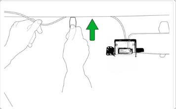
1. Conceal the harness¶
Ensure the harness is properly tucked inside the top trim.
2. Use the provided tool for routing¶
Utilize the tool provided with the camera to neatly route the harness along the headliner and the A-pillar.
3. Follow the harness path¶
Guide the harness along the side or behind the interior panels towards the power source.
4. Secure excess wiring¶
Use the wire ties to fasten any excess/loose harness.
5. Prioritize safety¶
Verify that no part of the harness comes in the way of normal vehicle/driver function.
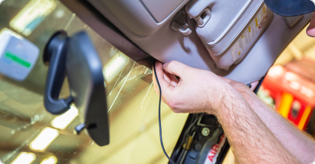
VI. Connecting and testing the camera¶
1. Start the vehicle¶
Turn on the vehicle’s ignition.
2. Check the LED light¶
Wait for one minute and observe the camera’s LED. A green LED blinking every 15 seconds indicates that the camera is functioning correctly.
3. Listen for alerts¶
Ensure that you can hear audible alerts from the camera.
VII. Final steps and troubleshooting¶
1. Ensure clear visiblity¶
Confirm that the camera has a clear and unobstructed view of both the road and the driver field-of-view.
Remember to remove the protective film from both camera lenses.
2. Verify network connectivity¶
Check for a green LED light blinking every 15 seconds, this confirms that the camera is connected to the network.
3. Confirm recording¶
Verify that the camera is recording properly.
Press the panic button to capture media and listen for the audible alert.
Wait for a minute and then check the Terminus GPS platform to confirm the video or image is accessible.
4. Check camera alignment¶
Ensure that the camera lens is oriented correctly. Make any necessary adjustments, if needed.
VIII. Completing the installation¶
1. Secure the camera¶
Ensure the camera is firmly mounted and fastened in place.
2. Brief the driver¶
Explain the system’s operation to the driver.